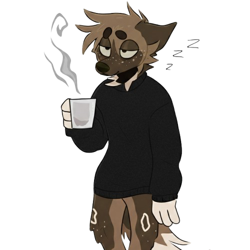
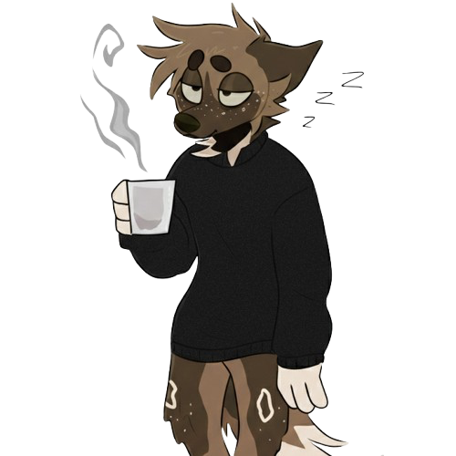

Tae Emmerson
/teɪ/; pronounced tay
lastname.firstname@gmail.com
 

I graduated summa cum laude with a Bachelor of Science in Computer Science from the University of Pittsburgh in 2024. While earning my degree, I worked part-time as a researcher and engineer at Signature Diagnostics with Professor Paul Cohen. After graduating, I was fortunate to work with Professor Adriana Kovashka and Professor Ryan Shi.
Publications
A Multimodal Recaptioning Framework to Account for Perceptual Diversity Across Languages in Vision-Language Modeling
Kyle Buettner, , Adriana Kovashka
IJCNLP-AACL'25 | International Joint Conference on Natural Language Processing & Asia-Pacific Chapter of the Association for Computational Linguistics
pdfabstract
Towards Automated Scoping of AI for Social Good Projects
, Rayid Ghani, Ryan Shi
preprint
pdfabstract